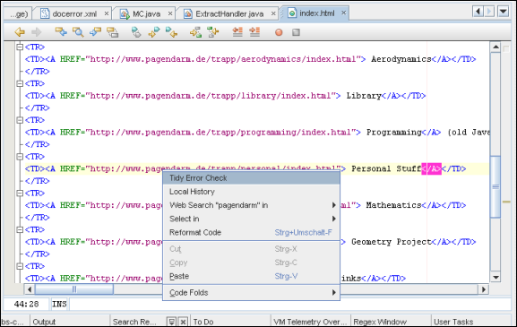
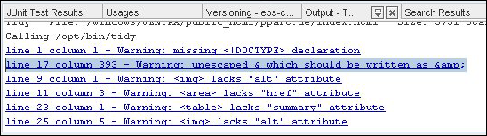
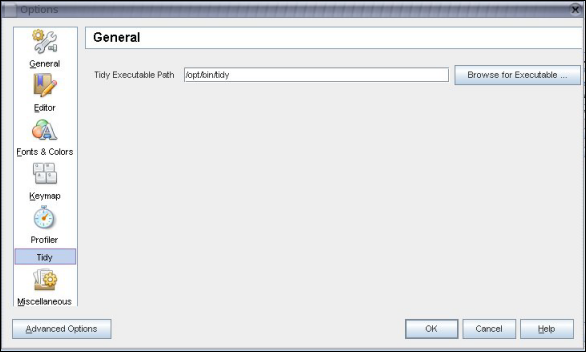

|
Jens Trapp |
Jens Trapp recently popped up on the NetBeans mailing lists to announce that he had created a NetBeans module. (He also blogged about it.) NetBeans staff interviewed him.
Greetings from the beautiful town of Hamburg in Germany! Java is the focus of my daily work. I work as a consultant at Sun Microsystems. As such, I work in quite a lot of different areas, from design, to implementation (mainly of prototypes), reviews, troubleshooting, sizing, and technology consulting. So, I've put the title "software architect" on my business card, because I think this covers most of what I do!
I've been a member of the German Java user group for almost ten years now, but haven't been very active lately. I contributed a little bit to some open source projects, but until now haven't actually been a member of any open source project.
I always like to get a deep inside-view in a technology before I recommend it to others. I did quite a lot of rich-client development in the past and it has always been hard work to create comfortable feature-rich client applications. So I thought that by using a higher level framework, such as the NetBeans Platform, to implement a user interface, would not only save me a ton of time, but also the result will be more feature-rich, because you get so many things for free. So, that was the reason for me, why I wanted to implement a NetBeans module.
For my first module I was looking for a small tiny piece of functionality, so that I could start small and then learn more while continuing. Then I got the idea of integrating the HTML Tidy checker into NetBeans IDE. I use it quite often, so integrating it into NetBeans IDE was kind of natural and it really met the above requirements.
The module currently consists of only three little pieces, but I think that's already very useful. Firstly, I call Tidy as an external program:

Secondly, I print the HTML errors in the output window:

If the user selects an error line, the cursor will automatically jump to the line in the corresponding HTML file. Thirdly, there is an Options window that's required, because the path for the Tidy tool, which needs to be available on the system, is platform-dependent:

So, what I've achieved so far is a very generic approach for including external checking tools.
I basically did the work with NBTidy in three steps:
DataObject dObj = (DataObject) activatedNodes[i].getCookie(DataObject.class);
FileObject fileObj = dObj.getPrimaryFile();
File file = FileUtil.toFile(fileObj);
TidyOutputListener listener = new TidyOutputListener(dObj);
writer.println(tabName + " - File: "+file+" - Size: "+file.length()+" Starting ...");
writer.println("Calling "+TidySettings.get(TidySettings.KEY_EXECUTABLE));
NbProcessDescriptor tidyProcessDesc = new NbProcessDescriptor(
TidySettings.get(TidySettings.KEY_EXECUTABLE),
TidySettings.get(TidySettings.KEY_ERROR_CHECK_ARGUMENT)
+" "+ file.getAbsolutePath());
Process process = tidyProcessDesc.exec();
And then I write to a tab in the Output window. Opening a new Output tab is quite simple, thanks to the
OutputWriter class, which is
a subclass of PrintWriter, and is used for writing to a tab in the NetBeans Output window:
InputOutput io = IOProvider .getDefault ().getIO (tabName, false); io.select (); //Tree tab is selected OutputWriter writer = io.getOut ();
writer.println (errMessage, listener);
The Listener is a class that needs to implement an Interface called OutputListener. When a Listener is registered, the line is selectable with the mouse. When clicking on that line, the Listener class will be invoked. I then parse the line to read the line number. From that I generate a NetBeans Line object and then call show on that line to get it in focus:
public void outputLineAction (OutputEvent outputEvent)
{
String lineString = outputEvent.getLine ();
LineCookie lc = (LineCookie) dataObject.getCookie (LineCookie.class);
Pattern pattern = Pattern.compile (TidySettings.get (TidySettings.KEY_ERROR_OUTPUT_PATTERN));
Matcher matcher = pattern.matcher (lineString);
String lineNumberString = matcher.group (TidySettings.getInt (TidySettings.KEY_ERROR_OUTPUT_PATTERN_LINE_MATCH_GROUP_INDEX));
String columnNumberString = matcher.group (TidySettings.getInt (TidySettings.KEY_ERROR_OUTPUT_PATTERN_COLUMN_MATCH_GROUP_INDEX));
String raeson = matcher.group (TidySettings.getInt (TidySettings.KEY_ERROR_OUTPUT_PATTERN_LINE_MATCH_GROUP_REASON_MATCH_GROUP_INDEX));
int lineNumber = Integer.parseInt (lineNumberString);
int columnNumber = Integer.parseInt (columnNumberString);
Line l = lc.getLineSet ().getOriginal (lineNumber-1);
//System.out.println("Select "+lineNumberString+"["+l.getLineNumber()+"]/"+columnNumberString+":"+raeson);
l.show (Line.SHOW_GOTO, columnNumber);
}
Now the NBTidy integration is almost done. But since an external version of Tidy is used, the user needs to be given an opportunity to configure the path to the executable. This is done in step three.
class TidySettings
{
private Properties settings;
...
FileObject settingsFolder = Repository.getDefault().getDefaultFileSystem().getRoot().getFileObject("Settings");
if (settingsFolder==null) {
settingsFolder=Repository.getDefault().getDefaultFileSystem().getRoot().createFolder("Settings");
}
FileObject settingsFile = settingsFolder.getFileObject("nbtidy","properties");
if (settingsFile==null) {
settingsFile = settingsFolder.createData("nbtidy","properties");
}
lock = settingsFile.lock();
OutputStream out = settingsFile.getOutputStream(lock);
settings.storeToXML(out,"Configuration for netbeans tidy module");
out.close();
lock.releaseLock();
}
The settings properties are used to store the external path to the Tidy executable. I implemented a singleton to represent the settings. The first time this class is accessed, the settings are loaded (or generated).
As you can see, the approach so far is quite generic and could easily be applied to other tools as well.
For the future I plan to add a wizard, which will allow you to call Tidy to do transformations on the document.
I think that NetBeans has already done quite a good job by offering wizards and tutorials. But I think that work is not complete. I had some difficulties finding documentation for some NetBeans APIs that have not been covered in tutorials yet. I also thought about writing a tutorial on how I built my module to add to my experiences about the APIs I use to the knowledge pool.
Also, some of the tutorials are already a little outdated (e.g., the tutorial on Options), because NetBeans APIs have slightly changed since their writing. It would be great, if they could get updated.
Code completion is one of the coolest features. It allows you to examine an API really fast, even if the documentation is insufficient.
It's really amazing how fast you can add new features to the platform. The other thing is the capability of testing the modules in the same IDE without a restart. This makes it really easy to test small changes.
In a recent project we built a rich client to select and describe files. We built everything from scratch. In the end it looked much like typical IDEs and had many similar features. If we had used the Netbeans Platform instead, we really could have saved a lot of time!
It's hard to name a special feature. I think NetBeans has made huge progress in all areas. I consider the following the most important: the windowing system, the Navigator, and refactoring. Also the XML integration is quite cool. I'm doing quite a lot of complex things with Schemas and with XSLT. NetBeans is well-suited for it.
More of the little tutorials that explain a single aspect of the IDE.
I've been using NetBeans for many years know. The progress it made over the last year was cool. Keep on going!
For information about creating and developing plug-in modules and rich-client applications, see the following resources: